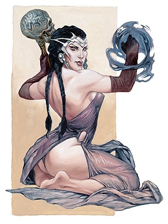

“暗之主，影之王，乌黯统治着夜空！我主格拉兹特，我沐浴在您的怒火中，请赐予我无上的荣光！”
～贝斯莫

格拉兹特的仆役阴险狡诈，精通秽恶的奥术知识以及黑暗的奥义。他们像博学士一样学识渊博，但当普通的博学士在图书馆中研究学习时，格拉兹特的仆役却在通过自己出色的魅力和精明的头脑骗取秘密。
法师，牧师以及吟游诗人可以成为格拉兹特出色的信徒，而术士可能是格拉兹特的信徒中最为优秀的家伙。虽然他们自己可能不知道，但很多术士就是在格拉兹特的影响下，第一次掌握了法术的秘密。
格拉兹特的仆役通常会结成团伙行动，他们也有时会与刺客或是游荡者团体结盟，一起掌控整个世界的地下犯罪活动。格拉兹特的仆役渴望着力量，他们为所欲为，毫无顾忌。
生命骰：d6
需求：想要成为一名格拉兹特的仆役，角色必须满足以下条件：
阵营：任意邪恶
技能：知识（奥术）5级，唬骗2级，交涉2级
专长：恶魔仆役，秽恶法术
特殊：角色必须能够施展三级邪恶法术。
特殊：想要正式成为一名格拉兹特的仆役，角色必须进行一种恐怖的仪式，包括活活杀死一名智能生物。仪式必须在由“亵渎术”或“邪居”影响下的黑暗中举行。
本职技能：唬骗（魅力），专注（体质），解读文书（智力），交涉（魅力），收集情报（魅力），躲藏（敏捷），暗语沟通（感知），知识（任意）（智力），聆听（感知），潜行（敏捷），开锁（敏捷），表演（魅力），扒窃（敏捷），探知（智力），搜索（智力），观言察色（感知），法术辨识（智力），侦察（感知），使用魔法装置（魅力）
每等级技能点数：4+智力调整值
表5-13 格拉兹特的仆役
等级 基础攻击加值 坚韧豁免 反射豁免 意志豁免 特殊 魔法
1 +0 +0 +0 +2 媚惑 施法者等级+1
2 +1 +0 +0 +3 法术偷袭+1d6 --
3 +1 +1 +1 +3 黑暗魅力+1 施法者等级+1
4 +2 +1 +1 +4 法术偷袭+2d6，召唤次阶恶魔 --
5 +2 +1 +1 +4 黑暗魅力+2 施法者等级+1
6 +3 +2 +2 +5 法术偷袭+3d6，法术打击+1d6 --
7 +3 +2 +2 +5 黑暗魅力+3 施法者等级+1
8 +4 +2 +2 +6 法术偷袭+4d6，法术打击+2d6 --
9 +4 +3 +3 +6 召唤高阶恶魔 施法者等级+1
10 +5 +3 +3 +7 法术偷袭+5d6 施法者等级+1
职业特性：
擅长武器及防具：格拉兹特的仆役不擅长任何武器，防具以及盾牌。
魔法：当格拉兹特的仆役达到1级，3级，5级，7级，9级和10级时，每日法术数量会增加，就像之前的施法职业一样，但不能获得之前施法职业等级的其它能力（如：增进驱散或斥喝不死生物能力、超魔或制造物品专长等）。格拉兹特的仆役等级加上所具备的其它施法职业等级，决定其每日法术数量、可知法术与施法者等级。举例而言，8级法师卡莉伊丝进阶格拉兹特的仆役，则她获得新法术的数量如同9级法师，但在攻击加值与豁免加值等其它特性则沿用格拉兹特仆役的升级规定。若她下次升级时选择将法师升级，即成为9级法师／1级格拉兹特的仆役，她获得的法术数量与施法者等级如同10级法士。
若角色在成为格拉兹特的仆役前拥有多个施法职业，则必须选择要将此升级的格拉兹特仆役等级加在哪一种施法职业上，以决定新的每日法术数量。
媚惑（SP）：格拉兹特的仆役可以施展如同法术“媚惑人类”的效果，施法者等级相当于格拉兹特仆役的等级。
法术偷袭（SU）：若敌人失去敏捷加值，则格拉兹特2级以上的仆役所施展的攻击性魔法可以附加伤害。这是由于，格拉兹特希望自己的仆役能得到敌人的信任，再突然背叛对方，从而造成偷袭。在2级时，法术偷袭可以附加1d6点伤害，之后每提升两级，伤害增加1d6点，最终在10级时达到5d6点附加伤害。
黑暗魅力（EX）：格拉兹特3级以上的仆役在与邪恶生物进行有关魅力的检定时，可以获得奖励。在3级时，奖励值为+1，在5级时，奖励值为+2，在7级时，奖励值为+3。本奖励附加在理解动物，交涉，唬骗，收集情报，驯养动物以及表演检定上。
召唤恶魔（SP）：每日一次，格拉兹特4级以上的仆役可以召唤一名生命骰数5或以下的恶魔，如同一名15级施法者施展“怪物召唤术”。格拉兹特9级以上的信徒更可以每日召唤一名生命骰数10或以下的恶魔。
法术打击（SU）：当敌人处于格拉兹特仆役的近战威胁范围内时，格拉兹特的仆役所施展的攻击性魔法可以附加法术偷袭的一半伤害。6级或7级的仆役可以附加1d6点伤害，而8级以上的仆役可以附加2d6点伤害。